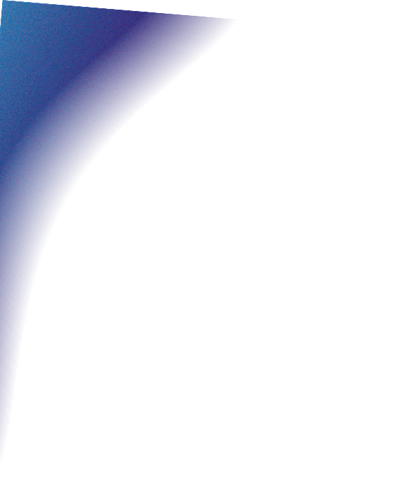
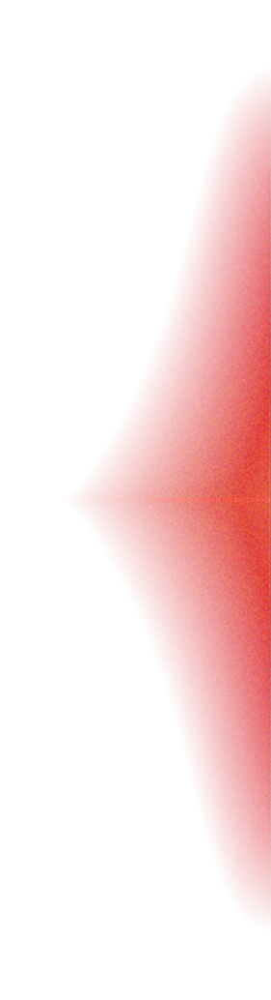
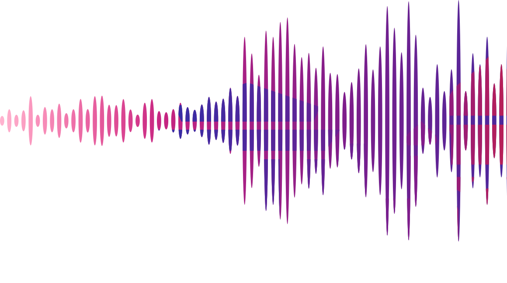
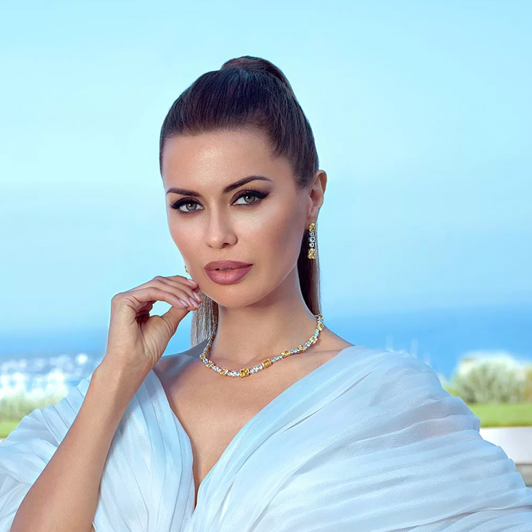
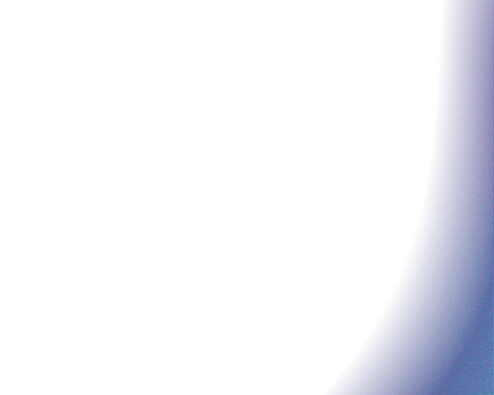
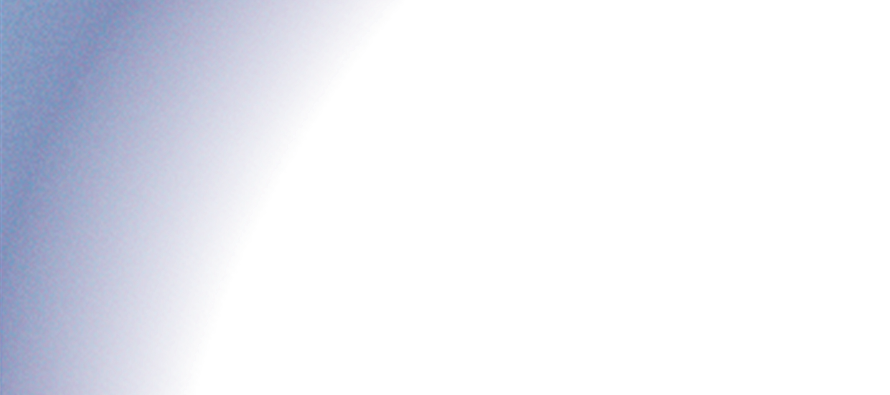

СПЕЦТРЕНИРОВКИ В НОЧЬ МОСКОВСКОГО СПОРТА
в музеях и культурных пространствах города
5 сентября, во время Ночи Московского спорта, специальные тренировки проходят там, где обычно знакомятся с искусством, историей и наукой.
Музеи, культурные центры, дворцы и даже колесо обозрения на один вечер становятся площадками для спорта.

Музей современного искусства
Функциональная тренировка во дворе музея
Чеховская
18:00–19:00
100+ человек
ул. Петровка, 25 Построить маршрут

Приглашенный гость:
Виктория Боня
Вечер начинается с функциональной тренировки в уютном внутреннем дворике музея, а продолжается выставкой музея в сопровождении экскурсовода. Тренировку проводит студия SMSTRETCHING.
регистрация
Музей декоративного искусства
Танцевальная тренировка во дворе музея
Новослободская
Танцевальная тренировка под открытым небом во внутреннем дворе старинной усадьбы. После занятия — экскурсия по выставке музея. Тренировку проводит студия SMSTRETCHING.
регистрацияМузей музыки
Танцевальная тренировка во дворе музея
Чеховская
Танцевальная тренировка во внутреннем дворе музея, где музыка становится частью спортивного вечера. После занятия — экскурсия по экспозиции.
регистрация
Московский планетарий
Растяжка среди звезд
Баррикадная
18:00–19:00
до 70 человек
Садовая-Кудринская, 5, стр. 1 Построить маршрут
Приглашенный гость:
Виктория Боня
Растяжка в одном из крупнейших научно-просветительских центров мира — в атмосфере космоса. Тренировку проводит студия SMSTRETCHING.
регистрация